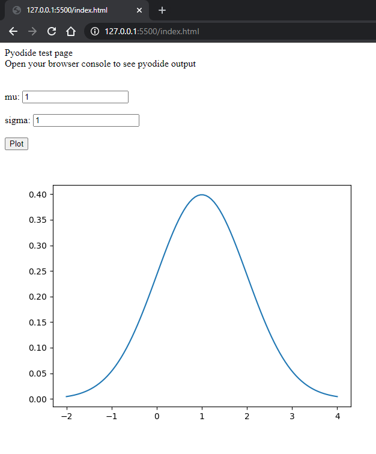

Generating HTML code directly from Python
Example #2
For our second example, we are going to do something ambitious. We are going to map a plot with several Python libraries with the help of Pyodide!
First, we have to import the libraries that we are going to use (such as numpy and matplotlib).
In order to do that, we have to declare the imports in Python:
and then execute the code:
As you can see, we are wrapping the imports in a different Pyodide wrapper.
This time, in order for the imports to work properly we have to run the Python code inside an asynchronous function.
Once we imported our libraries, we have to write our Python code, like in the previous example:
This code generates the plot, its value fields and the 'plot' button, as well as append all of these components into our html page.
Finally, we just have to run the code:
and voilà!
Resulting page:

Example 1
Back to Intro